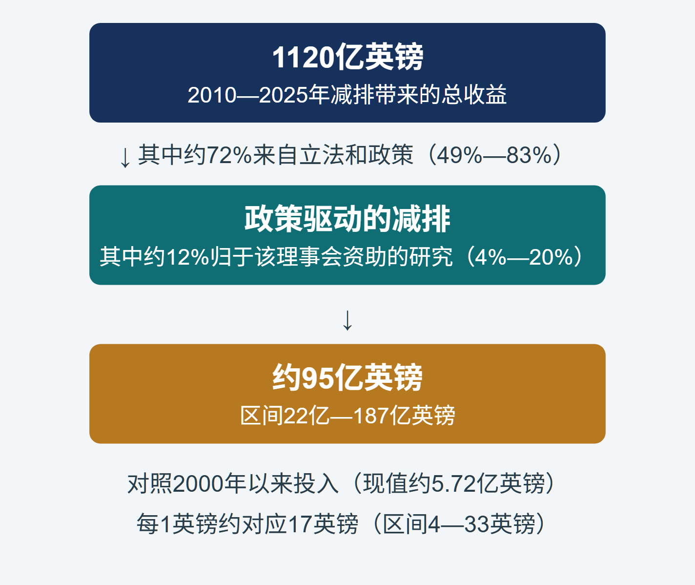

这事有研究 / 国际科技智库周报
英国研究与创新署自然环境研究理事会（UKRI–NERC） · 2026-11-25 · 委托评估报告，47页
英国自然环境研究理事会是英国空气质量环境研究的主要资助方。2000年至2024年，它在空气质量研究上投入约3亿英镑（早期年份为回推估算；按报告统一的价格和折现口径约5.7亿英镑），约占其研究总支出的6%。理事会委托经济咨询机构Human Economics与Logika Group做成本收益分析，评估这笔长期投入的社会回报，报告于11月25日发布。
评估先算空气改善的总收益。 2010年至2024年，英国二氧化硫、氮氧化物和细颗粒物排放分别下降80%、54%和34%。评估以2007年政府排放预测作为“如果没有新政策”的对照，2024年三项排放分别比对照低70%、31%和38%。按英国环境部的污染损害成本方法，2010年至2025年这些减排带来约1120亿英镑总收益，其中健康收益1073亿英镑（按2025/26年度价格折现计算；2025年排放按2024年水平估算）。
再一步步扣出研究的份额。 这是评估中最难也最关键的一步。评估邀请22位熟悉研究如何进入政策的专家，收回10份匿名问卷，请他们分三步估计：减排中有多大比例来自立法和政策，而非技术进步、经济结构变化等；这些政策有多大程度依据了研究成果；这些研究成果有多大程度依赖该理事会的资助。取第10、50、90百分位作为低、中、高估计。由于受访者七成是科学家，可能高估研究的作用，评估又把研究归因的估计统一下调50%（“乐观偏差”调整）。

评估把总收益依次乘以“政策贡献比例”和“该理事会资助的贡献比例”，得到归于该项资助的收益。资助贡献比例已下调50%。图示为简化表示，比例经过取整，不能据此精确复算最终金额。数据来源：Human Economics与Logika Group为该理事会所作评估，2026年10月定稿。
结果。 中间估计是：约72%的减排来自立法和政策（区间49%—83%），其中约12%可归于该理事会资助的研究（区间4%—20%），即自2010年以来约95亿英镑社会收益（区间22亿—187亿英镑）。考虑到研究到政策再到效果的时滞，评估拿它与2000年以来的全部投入（统一口径约5.72亿英镑）相比，得出每投入1英镑约产生17英镑社会收益（区间4—33英镑）。评估认为这是偏保守的下限：损害成本法没有计入证据不足的影响，2025年以后仍会持续产生收益。
研究通过哪些途径起作用。 报告归纳了三条：资助的研究成为英国认识本国空气质量问题的证据基础，影响监管重点和地方行动；长期数据集、大气模型和分析工具使政策可以被设计、测试和评估；培养的专家进入咨询机构、政府和企业，把新知识用到实处。
企业收益只作示例，不与上面的数字相加。 赫特福德大学基于该理事会资助研究开发的光学颗粒计数器，已用于70多个国家的空气污染监测，2015年以来带来5300万英镑收入，支撑30多个岗位；莱斯特大学2016年衍生的EarthSense公司年营业额160万英镑，员工20多人。报告说明，这些是总额而非新增贡献，收入不等于经济价值，也无法精确归因，因此不并入成本收益结果。
报告最后指出，传统污染源减少后，农业氨排放和交通非尾气排放等更难治理的来源比重上升，需要新的证据、方法和监测能力。